A rolling build log of one car — speakers, amplifiers, power distribution, custom lighting and microcontroller-driven details, engineered piece by piece.
Two early microcontroller builds that set the direction: identity, sound, and lighting working together.
It started with a simple six-speaker setup — upgrading the two front woofers and tweeters first.
The amplifier for those speakers went under the passenger seat, and the DSP (Digital Signal Processor) lived in the center console for fine sound adjustments.
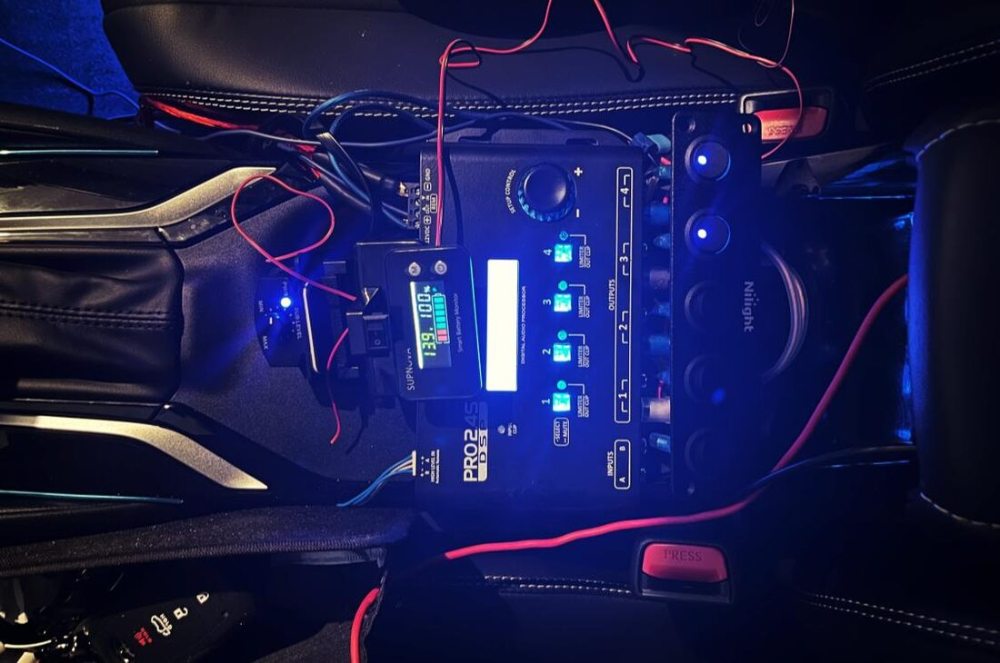
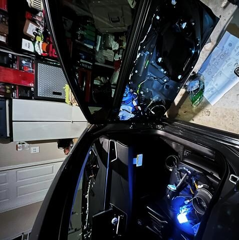
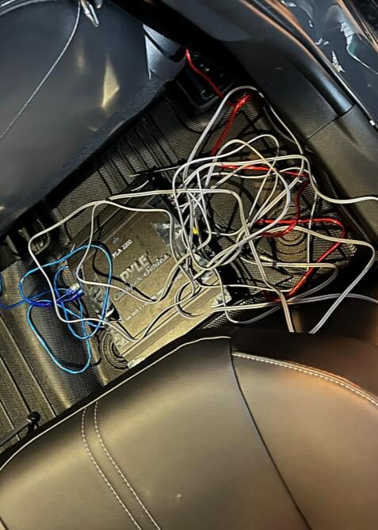
The system grew with three mid speakers up front and coaxial speakers in the rear.
To fix stereo-image issues, two relays toggle the center speaker between the left and right channels.
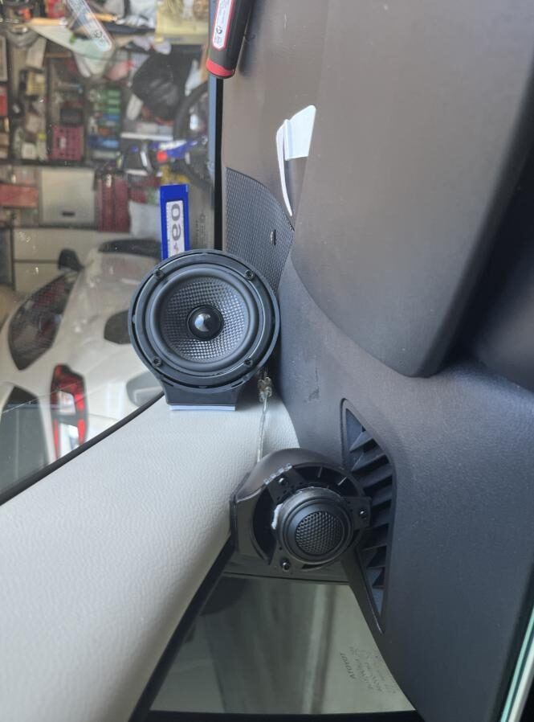
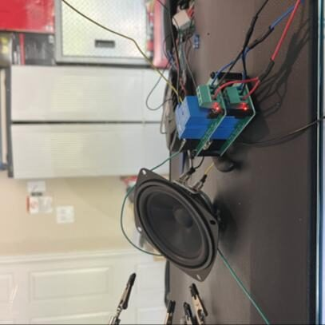
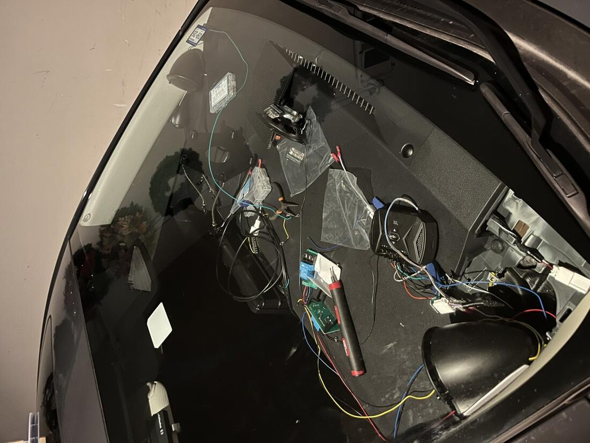
With the added amplifiers and mods, the battery was pushing nearly 70A at peaks of 900W.
Most components run on 4-gauge wire through the firewall, with a 5V converter at the center console powering the microcontrollers and three rear amplifiers.
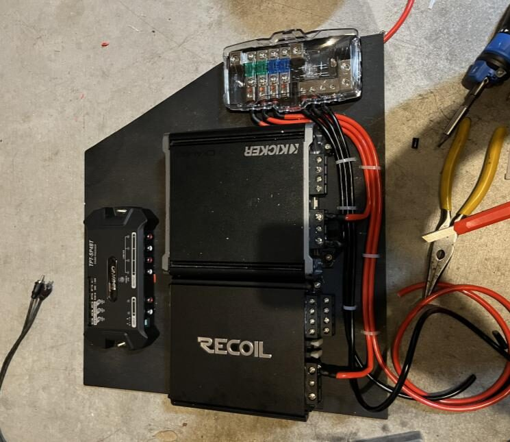
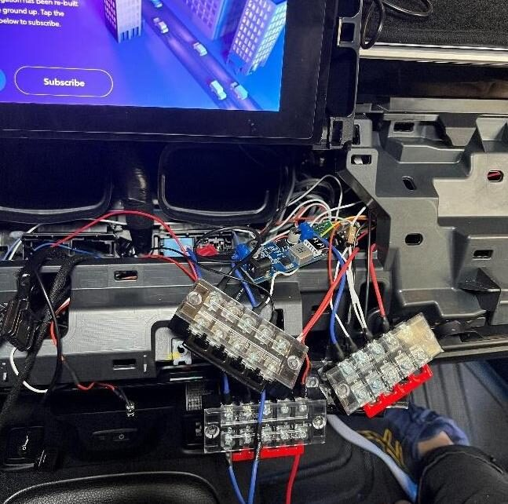
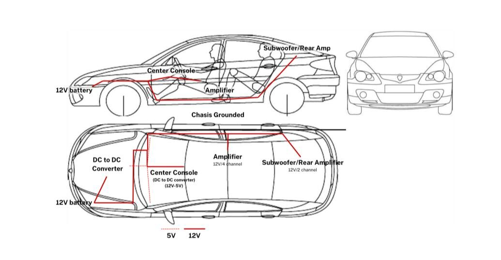
A miniature car sits on the dashboard and mirrors the driver's inputs — turn signals, headlights, brake lights and more.
Each component of the model is wire-tapped to relays under its base, acting as toggles for the LEDs.
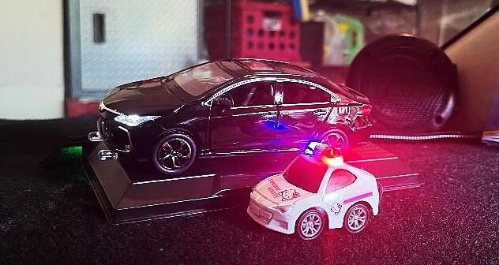
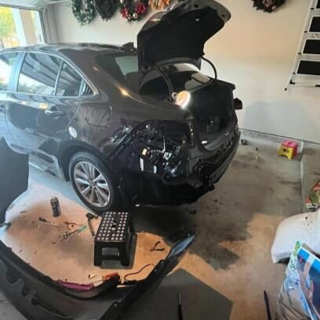
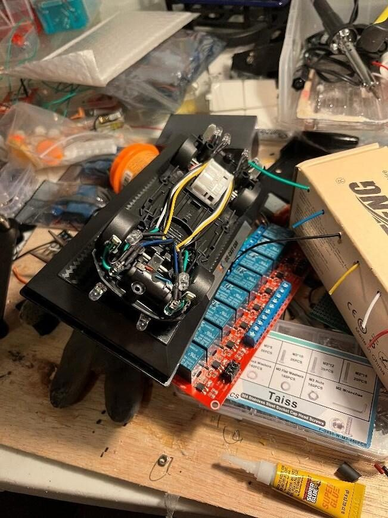
For a dark neighborhood, a separate microcontroller cycles the floodlights through their modes via relays until the right one is set. Each light sits diagonally from the headlights to cover the spots the high beams miss.
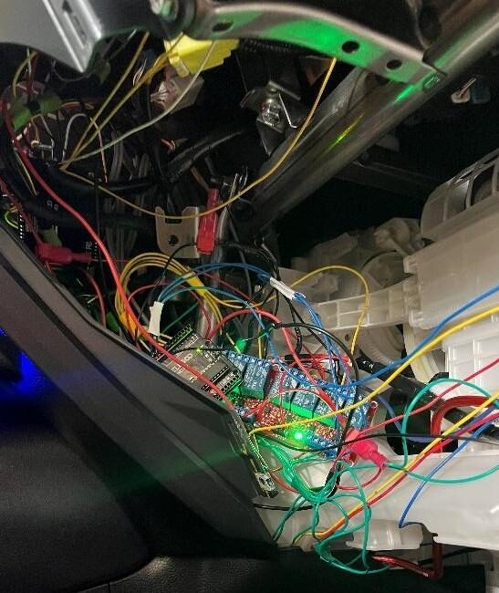
DRAG TO COMPARE — BEFORE / AFTER
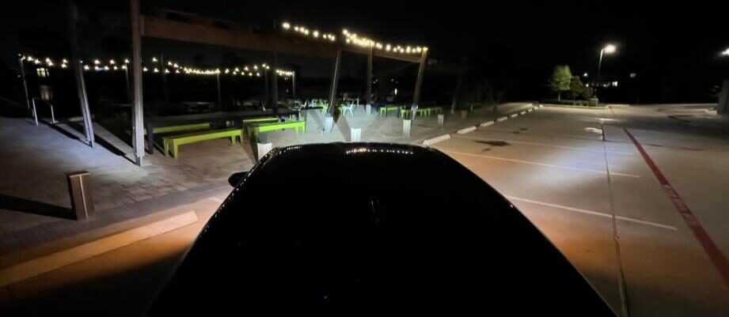
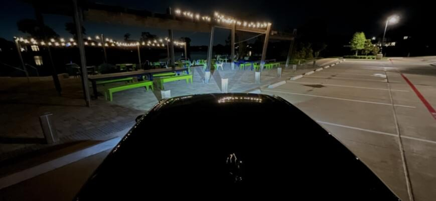
Every system threw problems. Here are three that mattered — and how each was solved.
The hybrid's DC-DC converter only delivered ~80A to charge the 12V battery — pull more than that and it drains over time.
Switched to a more efficient Class-D amp and cut larger holes in the woofer baffles to use the full door cavity.
RCAs from the DSP ran too close to the power wires, causing a large buildup of noise through the speakers.
Power wires routed through the right door sills, RCAs through the left — isolating both regions and killing the interference.
Some DC-to-DC converters and relays kept drawing power even with the car switched off.
Added five center-console switches to manually cut power to specific components.
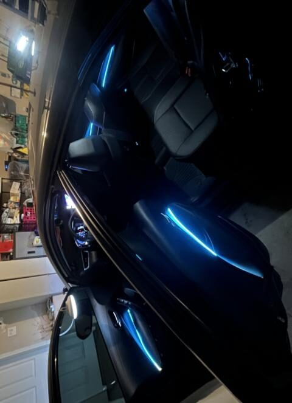
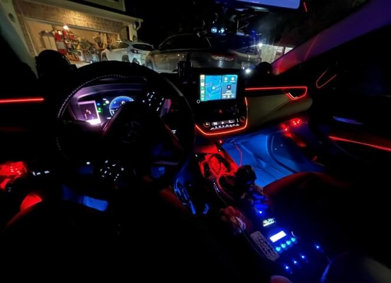
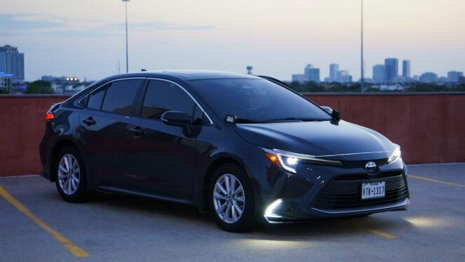
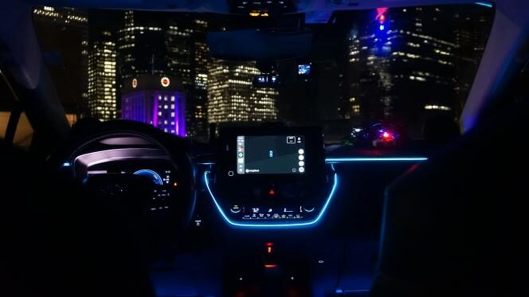
An ESP32 and optical fingerprint sensor replace the ignition button — verifying driver identity before the car starts, and syncing DSP presets per user via Bluetooth.
COMPLETED · EARLY PROJECTThe driver places their finger on the optical sensor embedded in the ignition button surround.
The ESP32 compares the scan against stored templates — up to 127 registered users, false-acceptance rate under 0.001%.
On a match, a relay closes the ignition circuit. On failure the circuit stays open and an LED flashes red.
The authenticated user ID is broadcast over BLE to a paired phone, which loads that driver's DSP audio presets automatically.
Dual-core MCU handling fingerprint matching, relay control, and BLE communication simultaneously without an RTOS.
250 dpi optical fingerprint module with onboard flash for template storage — up to 127 enrolled fingers.
A 12V-to-3.3V buck converter and automotive relay tie the system directly to the vehicle's battery and ignition line.
Broadcasts the authenticated user ID to a paired Android device for preset loading and remote-start unlock.
The ESP32 runs from a buck converter tapped at the fuse box. A 5A inline fuse protects the branch circuit.
The ignition relay is wired in series with the ignition line — if the ESP32 loses power, the relay defaults open so the car cannot start without system power.
Finger on R307 → ESP32 via UART at 57600 baud
Template match in onboard flash → relay drive logic
Relay closes ignition + BLE characteristic notify to phone
Audio from a speaker output jack is analyzed by an Arduino running a software FFT — individual LED banks react in real time to bass, low-mids, mids, and highs.
COMPLETED · EARLY PROJECTAudio from a computer's speaker output is fed into the Arduino's analog input via a 3.5mm jack and a voltage divider to center the signal at 2.5V.
The Arduino samples the signal and runs a 64-point software FFT to split the spectrum into four frequency bands.
Each band's running average is computed. Transient detection corrects for overall volume so the display stays reactive at any level.
PWM-controlled transistors drive each LED strip independently — brightness tracks the energy of its band in real time.
Kicks and sub-bass produce a strong, sustained pulse. Highest energy band in most music.
Body of guitars, piano, and male vocals. Warm, sustained energy between beats.
Presence and attack — snare cracks, vocal consonants, pick transients live here.
Air and shimmer — cymbals, hi-hats, reverb tails and upper harmonics.
10-bit ADC samples audio at ~8 kHz. Handles FFT computation and four-channel PWM output in a tight main loop.
64-point FFT bins mapped into the four target frequency ranges. No external DSP chip — all computed on the Uno's ATmega328P.
Running average per band with transient peak detection prevents the display from flattening at low volumes or clipping at high ones.
PWM-controlled NPN transistors drive each LED strip at up to 1A. No LED controller IC — direct PWM from Arduino digital pins.
I build things that live at the edge of hardware and software — fingerprint-secured ignitions, DSP-tuned speaker arrays, microcontroller-driven lighting, and automotive power systems engineered from scratch.
The work starts with something that bugs me, and ends when the solution is cleaner than I expected it to be.
Whether it's a project collab, a technical question, or just to say hello — reach me through any of these channels.